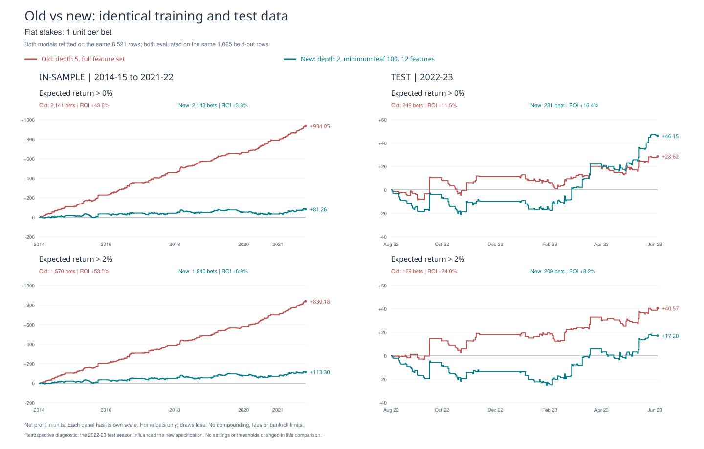
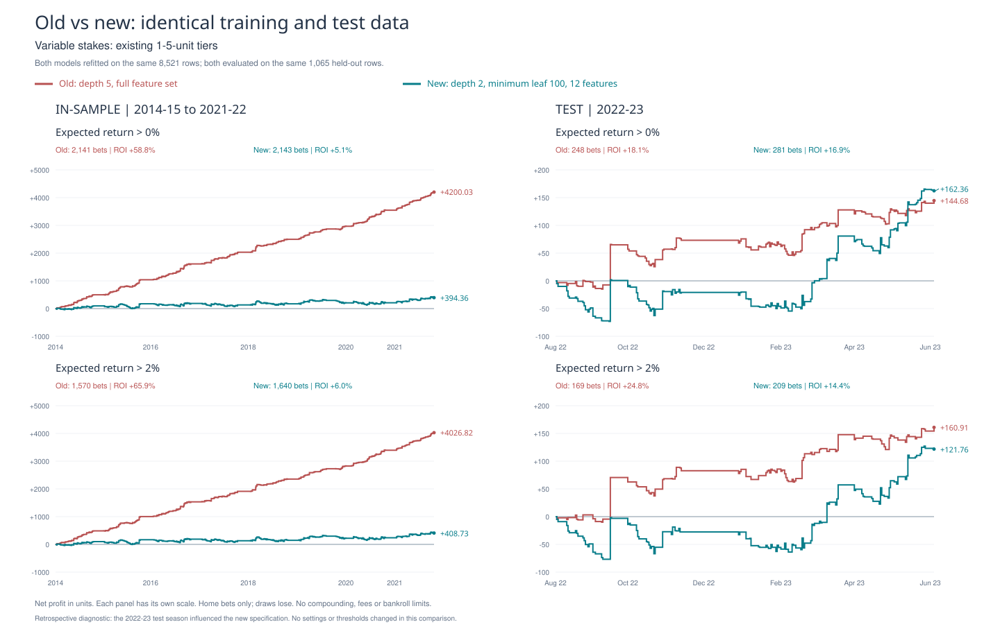

Both fits: 8,521 matches, 2014-15 through 2021-22. Both tests: 1,065 matches in 2022-23.
Identical ordered training rows, test rows, labels, odds, random seed (20261020), 500 trees, and home-only betting rules. Fit all preprocessing on the training rows only. Ordinary fitted predictions for training; no test rows used in either fit. No retuning.
2022-23 is previously inspected and influenced the new model specification. This is a controlled retrospective diagnostic, not an untouched evaluation of model selection. Both features and forest regularization differ, so their individual effects are not isolated. Historical rating publication timestamps remain unverified.
The 2025-26 prepared table lacks the old specification's history and rating inputs. Use the common complete historical split rather than fabricate missing old inputs.
| model | train_log_loss | test_log_loss | log_loss_gap | train_brier | test_brier | brier_gap | train_accuracy | test_accuracy | accuracy_gap |
|---|---|---|---|---|---|---|---|---|---|
| old | 0.579214 | 0.631419 | 0.052205 | 0.198237 | 0.220585 | 0.022348 | 0.682549 | 0.637559 | 0.044990 |
| new | 0.603450 | 0.630652 | 0.027201 | 0.207827 | 0.220200 | 0.012373 | 0.677033 | 0.641315 | 0.035719 |
| market | 0.602245 | 0.632411 | 0.030167 | 0.207788 | 0.220922 | 0.013134 | 0.677737 | 0.637559 | 0.040179 |


| model | strategy | staking | bets_train | net_train | roi_train | bets_test | net_test | roi_test | roi_gap_percentage_points |
|---|---|---|---|---|---|---|---|---|---|
| old | Home only: positive expected return | flat | 2141 | 934.05000 | 0.43627 | 248 | 28.62000 | 0.11540 | 32.08649 |
| old | Home only: positive expected return | tiers | 2141 | 4200.03000 | 0.58766 | 248 | 144.68000 | 0.18062 | 40.70391 |
| old | Home only: expected return >2% | flat | 1570 | 839.18000 | 0.53451 | 169 | 40.57000 | 0.24006 | 29.44504 |
| old | Home only: expected return >2% | tiers | 1570 | 4026.82000 | 0.65949 | 169 | 160.91000 | 0.24832 | 41.11679 |
| new | Home only: positive expected return | flat | 2143 | 81.26000 | 0.03792 | 281 | 46.15000 | 0.16423 | -12.63161 |
| new | Home only: positive expected return | tiers | 2143 | 394.36000 | 0.05138 | 281 | 162.36000 | 0.16895 | -11.75733 |
| new | Home only: expected return >2% | flat | 1640 | 113.30000 | 0.06909 | 209 | 17.20000 | 0.08230 | -1.32113 |
| new | Home only: expected return >2% | tiers | 1640 | 408.73000 | 0.05964 | 209 | 121.76000 | 0.14392 | -8.42819 |
{
"metric": "Test binary log loss: new minus old; negative favors new",
"difference": -0.000766738113110128,
"lower_95": -0.004413543801305419,
"upper_95": 0.0033660675075809932,
"limitation": "Descriptive paired interval; does not account for model-selection exposure to this test season."
}{
"training_rows_identical": true,
"test_rows_identical": true,
"old_refit_reproduces_original": true,
"new_refit_reproduces_earlier_forward_fit": true,
"outcome_free_inference": true,
"saved_model_roundtrip": true,
"settlements_checked": 76688
}